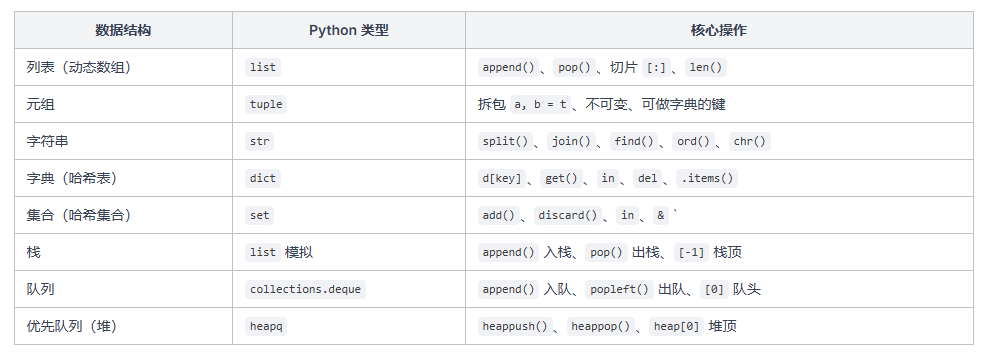

Python 基础入门(4)
常用数据结构
上一篇我们学了函数、lambda、列表推导式等语法糖。这篇是整个 Python 教程中最重要的一篇——我们要系统学习 Python 中刷算法题最常用的数据结构。
算法题的本质就是对数据结构进行操作，如果你不熟悉这些数据结构的基本用法，看算法代码就会一头雾水。好消息是，Python 的数据结构用起来非常简洁直观，你不需要记住所有 API，只需要掌握最常用的那几个操作就够了。用多了自然就记住了，忘了随时可以回来查。
列表 list
列表是 Python 中最基础、最常用的数据结构，你可以把它理解为”可变长度的数组”。几乎所有算法题都离不开它。
创建与初始化
常用操作
append 和 pop 是刷题时用得最多的两个操作，它们操作的都是列表末尾，时间复杂度 O(1)。而 pop(i)、insert(i, x)、del 操作的是中间位置，需要移动元素，时间复杂度 O(n)。
切片操作
切片是 Python 的一大特色，能非常灵活地截取列表的一部分：
切片用得最多的场景：nums[:i] + nums[i+1:] 跳过索引 i 的元素，nums[::-1] 反转列表。这些在刷题时非常常见。
遍历列表
推荐用 enumerate，因为大部分时候你既需要索引又需要元素值。直接写 for i, val in enumerate(nums) 就行，比 for i in range(len(nums)) 然后再 nums[i] 取值要简洁得多。
元组 tuple
元组和列表长得很像，但有一个关键区别：元组创建后不能修改。
你可能会问：既然元组不能修改，那为什么还要用它？元组在刷题中主要有三个用途：
- 多返回值：函数返回多个值时，实际上返回的是元组，用拆包接收
- 字典的键：列表不能当字典的键（因为可变），但元组可以
- 排序的 key：用元组做排序的 key 可以实现多级排序，比如
key=lambda x: (x[1], x[0])
多级排序这个技巧非常实用：元组在比较时会先比第一个元素，相等再比第二个，以此类推。想要降序就取负号。
字符串 str
Python 的字符串也是不可变的——你不能修改字符串中的某个字符，想修改就只能创建新字符串。
基本操作
字符串不可变这个特点很重要：每次用 + 拼接字符串，实际上都会创建一个新的字符串对象。如果在循环里频繁拼接，效率会很低。后面会讲更高效的做法。
常用方法
刷题时最常用的字符串方法：split 用于解析输入，join 用于拼接输出，find 用于查找子串，strip 用于去除多余空白。
字符与 ASCII
算法题中经常需要操作单个字符和 ASCII 码，Python 用 ord() 和 chr() 来转换：
ord(ch) - ord('a')这个技巧把小写字母映射到 0~25，非常适合用数组代替哈希表来统计字母频率。刷题时很常用。
字典 dict
字典是 Python 中的哈希表实现，存储键值对，增删查改都很快（平均 O(1)）。这里只讲用法
常用操作
get 方法与默认值
直接用 d[key] 取值时，如果 key 不存在会报 KeyError。用 get 方法可以避免这个问题：
freq[ch] = freq.get(ch, 0) + 1 这是 Python 中频率统计的经典写法，一行搞定，不需要提前判断 key 是否存在。几乎每道跟”计数”相关的算法题都会用到这个套路。
集合 set
集合是一个不包含重复元素的无序容器，底层也是用哈希表实现的。它最大的特点是 in 判断非常快（O(1)），比列表的 in（O(n)）快得多。
什么时候用集合而不是列表？当你需要频繁判断”某个元素是否存在”的时候，一定要用集合。比如 BFS 中记录已访问的节点、两数之和中查找补数等场景，用集合比用列表效率高得多。
栈（list 模拟）
栈是”后进先出”（LIFO）的数据结构。Python 没有专门的栈类型，直接用列表就能模拟——append 入栈，pop 出栈，[-1] 看栈顶。
栈的操作总结：
- 入栈：
stack.append(x) - 栈顶：
stack[-1] - 出栈：
stack.pop() - 判空：
len(stack) == 0
这四个操作在括号匹配、单调栈等算法题中用得非常多。来看一个经典例子——括号匹配：
队列（deque）
队列是”先进先出”（FIFO）的数据结构，在 BFS（广度优先搜索）中必用。Python 用 collections.deque（双端队列）来实现高效的队列操作。
你可能会想：用列表不行吗？用列表的 pop(0) 也能实现出队，但 pop(0) 需要把后面所有元素往前移一位，时间复杂度 O(n)。而 deque 的 popleft 是 O(1) 的，效率高得多。
队列的操作总结：
- 入队：queue.append(x)
- 队头：queue[0]
- 出队：queue.popleft()
- 判空：len(queue) == 0
deque 其实是双端队列，两端都能高效地添加和删除。除了 append 和 popleft，还有 appendleft（从左端添加）和 pop（从右端弹出），但刷题时主要用前面两个就够了。
来看一个 BFS 的例子：
注意这里用 set 来记录已访问节点，用 deque 当队列，这是 BFS 的标准模板。
小结
把这篇的数据结构和核心操作汇总一下：
